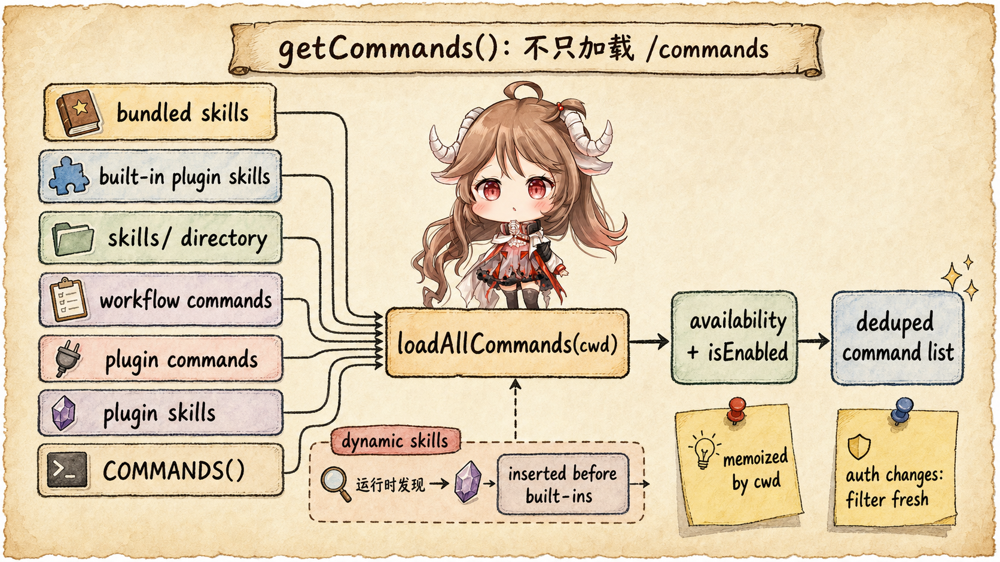
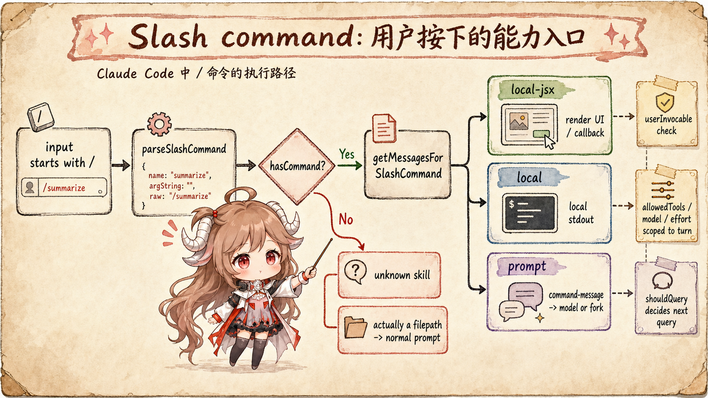
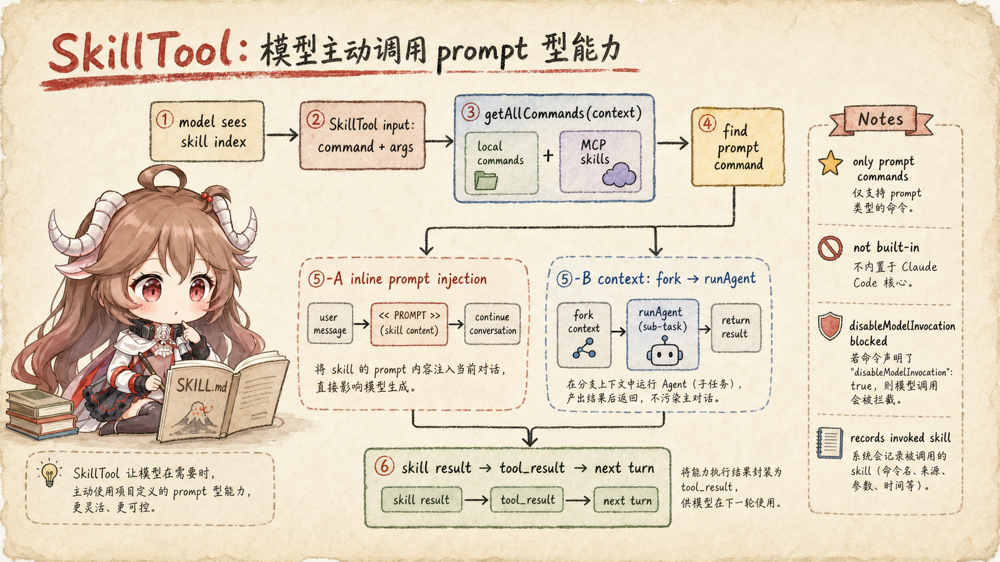
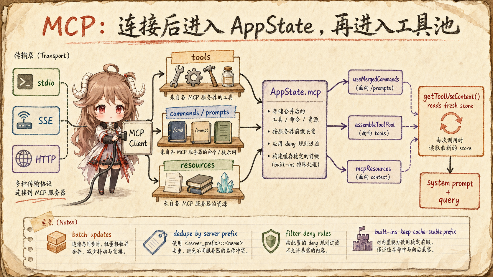

上一篇讲权限时，有个前提一直没展开：权限系统拦的是“工具调用”， 可工具调用并不只来自 Claude Code 内置工具。用户自己写的 slash command、项目里的 Skill、插件里的命令、 MCP 服务器暴露的 tools / prompts / resources，都会改变模型这一轮能看到什么、能调用什么。
所以这一篇不把 / 命令、Skills 和 MCP 分成三篇孤立介绍。
在源码里，它们最终会进入两组明确的数据：先把能力加载成命令表或工具池，再决定它是用户主动触发，
还是模型在回合中主动调用。
这一篇的主线可以压成一句话：getCommands() 负责把本地、插件、workflow、skills
汇成命令目录；MCP 连接把 tools / commands / resources 写入 AppState.mcp；
REPL 在每轮查询前从 store 里重新组装 commands、tools 和 MCP clients。
用户敲 /xxx 走 slash command，模型想用 prompt 型能力走 SkillTool，
模型想调用外部服务器动作走 MCPTool。
阅读目标：这篇只追能力进入本轮请求的路径：命令目录从哪里加载，slash command
怎样把用户输入变成消息或本地动作，SkillTool 为什么只接受 prompt 型能力，MCP 为什么要先进入
AppState.mcp 再进入工具池。配置教程、MCP 协议细节和插件市场策略不在本文范围内。
产品层证据来自 Claude Code 的 slash commands 文档、 skills 文档、 MCP 文档； 源码层来自 Rememorio/claude-code 公开镜像。 本文只把客户端源码可见的加载、过滤、调用和上下文刷新写成事实；MCP server 的内部实现不从客户端代码里硬推。
这篇回答五个问题：
getCommands()到底加载了哪些来源，为什么不是只有/commands？- 用户输入
/xxx后，什么时候是本地 UI，什么时候是本地 stdout，什么时候会进模型？ - SkillTool 为什么能让模型主动调用 skill，但又不会把所有 slash command 都暴露出去？
- MCP 连接后，tools、prompts、resources 怎样写进
AppState.mcp？ - 为什么每轮 query 前都要 fresh read，而不是复用旧 closure 里的工具列表？
getCommands(cwd)
-> built-in commands
-> user / project commands
-> plugin commands
-> skill-backed commands
AppState.mcp
-> MCP tools / prompts / resources
-> model-facing tool pool for the next turn一、先分清两张表：命令表和工具池
很多人第一次看 Claude Code 的扩展能力，会下意识把所有东西都叫“工具”。 但源码里至少有两张重要的表：一张是 命令表，一张是 工具池。 命令表面向 slash command、skills、prompt expansion；工具池面向模型 API 的 tool schema 和后续 tool_use。
命令表的入口在
getSkills()
和
getCommands()。
工具池的入口在
assembleToolPool()
和
mergeAndFilterTools()。
MCP 同时会影响两边：MCP prompts / skills 可以进命令表，MCP tools 会进工具池。

getCommands() 不是只读一个目录，而是把多种能力来源先汇成命令目录，再按可用性过滤。1.1 getCommands() 不是只加载 slash commands
loadAllCommands(cwd) 同时拉取 bundledSkills、builtinPluginSkills、
skillDirCommands、workflowCommands、pluginCommands、
pluginSkills 和内置 COMMANDS()。这就是为什么一个 command 既可能来自源码内置，
也可能来自技能目录、插件或 workflow。
这里有两个细节很有意思。第一，加载本身按 cwd memoize，因为磁盘读取、插件加载和动态 import 都贵。
第二，meetsAvailabilityRequirement() 和 isCommandEnabled() 每次调用都重新过滤，
因为登录状态、provider、功能开关可能在会话中变化。也就是说，磁盘加载结果可以缓存，但“当前用户能不能看见”必须重新判断。
1.2 dynamic skills 插在内置命令前面
getCommands() 还会把运行中发现的 dynamic skills 合并进去，并且去重。
如果列表里有内置命令，它会把 dynamic skills 插到内置命令前面。
这个位置很讲究：动态发现的能力比内置命令更贴近当前项目，但又不能覆盖已有同名 command。
| 来源 | 进入哪张表 | 用途 |
|---|---|---|
内置 COMMANDS() |
命令表 | Claude Code 自带的 /help、/compact 等能力。 |
skills/、bundled skills、plugin skills |
命令表，也可能进入 SkillTool 列表 | 可被用户或模型按条件触发的 prompt 型能力。 |
| MCP prompts / skills | AppState.mcp.commands，再合并进命令视图 |
来自 MCP server 的 prompt 能力。 |
| MCP tools | 工具池 | 进入模型 tool schema，作为外部服务器动作被调用。 |
| MCP resources | mcpResources |
作为可读资源进入上下文或资源读取工具。 |
二、Slash command 是用户主动入口
用户敲 /xxx 之后，入口在
parseSlashCommand()
和
processSlashCommand()。
这条路径先解析命令名和参数，再查当前 context.options.commands。
找不到命令时，源码还会判断它是不是文件路径；如果更像普通输入，就会回到正常 prompt，而不是粗暴报错。

/xxx，后面可能是 UI、本地输出，也可能是 prompt expansion。2.1 找到命令以后，分成三类执行
getMessagesForSlashCommand() 根据 command type 分三路：
local-jsx
会加载 Ink UI，让命令自己通过 callback 返回结果；
local
会跑本地函数并把 stdout/stderr 写成 local command message；
prompt
会生成给模型看的 command message，或者在 context: fork 时启动 forked sub-agent。
这个分类解释了一个常见现象：不是所有 / 命令都会触发模型请求。
/help 这类 UI 命令可以只改本地界面，/cost 这类 local 命令可以只显示本地结果，
而 prompt 型命令才会把扩展后的内容塞进对话，进入下一轮 query。
2.2 Slash command 可以给本轮附带 model、effort、allowedTools
prompt 型 slash command 的返回结果里可以带 allowedTools、model 和 effort。
REPL 在真正发起 query 前，会把 slash-command-scoped allowed tools 写进当前回合的 permission context；
这段注释
说得很直白：它只应该作用在本轮，下一次非 skill 回合会清掉，避免旧 skill 的工具权限漏到新回合。
所以 slash command 不是简单文本替换。它可以改变本轮模型、思考强度和工具权限，但这些改变只能作用于当前一次 query。
三、SkillTool 是模型主动入口
Slash command 是用户主动按下的入口；SkillTool 则是模型主动调用 prompt 型能力的入口。
它本身是一个普通 tool，定义在
SkillTool.ts。
模型传入 skill 和可选 args，客户端再查命令表、验证类型、做权限检查、执行 prompt expansion。

SkillTool 把 prompt 型能力变成模型可调用工具；它不是让模型任意执行所有 slash command。3.1 SkillTool 只接受 prompt 型能力
validateInput() 会先去
getAllCommands(context)
查找命令。这里专门把 context.getAppState().mcp.commands 里 loadedFrom === "mcp"
的 prompt command 合进来，因为普通 getCommands() 只覆盖本地和 bundled 侧能力。
但合进来不等于全都能用。
校验逻辑
会拒绝不存在的 skill、disableModelInvocation 的 skill，以及非 prompt 类型的 command。
也就是说，模型能主动调用的是“声明为可模型调用的 prompt 型能力”，不是所有 / 命令。
3.2 权限仍然在 SkillTool 上生效
SkillTool.checkPermissions() 不是直接 allow。
它先查 SkillTool 自己的 deny rule，再查 allow rule；如果这个 skill 只使用 safe properties，可以自动 allow；
否则默认返回 ask，并提供把当前 skill 或前缀写入 local settings 的 suggestion。
相关代码在
checkPermissions()。
这和上一篇权限系统连上了：模型“知道可以用某个 skill”不等于客户端“允许它使用这个 skill”。 SkillTool 自己也要接受权限检查，因为它可能进一步触发文件读写、Bash、MCP 工具或 forked sub-agent。
3.3 inline 和 fork 是两种不同的运行形态
如果 command 声明 context === "fork"，
executeForkedSkill()
会准备 forked command context，然后通过 runAgent() 启动子 agent，最后把结果作为 SkillTool 的 tool result 返回。
如果不是 fork，则会调用
processPromptSlashCommand()
生成新的 user messages，并通过 contextModifier 把 allowed tools 等限定到本轮。
这就是 SkillTool 最妙的地方：模型看到的是一个 tool call，客户端执行的却可能是“把 skill prompt 注入本轮”， 也可能是“开一个隔离的子 agent 跑完再回填结果”。对模型来说都是工具结果；对 runtime 来说是两套不同的上下文管理。
四、MCP 先进入 AppState，再进入工具池
MCP 这条线最容易被理解成“配置一个 server，然后多几个工具”。但从源码看，MCP 不是直接把工具塞到模型请求里。
它先建立 client 连接，拉取 tools / commands / resources，再批量写入 AppState.mcp。
连接管理在
useManageMCPConnections()。
这段 hook 负责初始化连接、注册生命周期回调、处理重连，并把每个 server 的状态、工具、命令和资源同步回 app state。

AppState.mcp 里的 tools、commands 和 resources。4.1 MCP 状态更新是批量写回的
flushPendingUpdates()
会把短时间内到来的 server updates 合并成一次 setAppState。
更新时，clients 按名字替换；tools 会先删掉同 server prefix 的旧工具再追加新工具；
commands 也会删掉属于同 server 的旧 command；resources 则按 server name 写进 map。
这说明 MCP 在客户端是一个会变化的运行时状态，而不是启动时一次性静态配置。 server 连接、失败、禁用、重连、刷新 prompts/tools，都可能改变下一轮上下文。
4.2 MCP tool 是包装过的 Claude Code tool
MCP tool 的基础定义在
MCPTool，
但真实工具名、schema、描述和 call 函数会在
fetchToolsForClient()
里根据 MCP server 返回的 tool 动态生成。源码还会限制描述长度、构造 fully qualified name、处理权限、调用 MCP tool、
截断或持久化大输出。
所以 MCPTool 更像一个模板。每个 server tool 进来以后，才被包装成 Claude Code 统一的 Tool 形状，
这样后面的权限检查、hook、UI 渲染和 tool_result 配对就能复用同一套工具执行代码。
五、每轮 query 前都要 fresh read
最后把命令表和工具池接回 REPL 主线。
getToolUseContext()
里有一段注释很关键：它不要 closure-captured 的旧 app state，而是从 store 里 fresh read。
原因也写在注释里：MCP server 可能异步连接，store 里已经有更新的 MCP state，而 React render 时捕获的 closure 可能还是旧的。
5.1 工具池先 assemble，再 merge/filter
computeTools() 先调用 assembleToolPool(state.toolPermissionContext, state.mcp.tools)。
这个函数会取内置工具、过滤 deny rules 下的 MCP tools、按名字去重，而且内置工具优先。
接着 mergeAndFilterTools() 把启动时工具和当前组装工具合并，再按内置/MCP 分区排序。
这里有个性能细节：排序不是为了好看，而是为了 prompt cache 稳定。 源码注释明确提到内置工具要保持连续前缀，避免 MCP tool 排序插进内置工具中间，导致后续 cache key 全部变化。 也就是说，能力扩展不仅影响“能不能调用”，还影响“系统提示词和工具 schema 的请求形状是否稳定”。
5.2 系统提示词也用 fresh tools 和 fresh MCP clients
真正发起 query 前，REPL 会再次从 toolUseContext.options 里取
freshTools 和 freshMcpClients，
再调用
getSystemPrompt(freshTools, ... freshMcpClients)。
这保证了系统提示词里的工具描述、MCP client 信息和实际执行时的工具池尽量对齐。
所以“能力进上下文”不是一个启动时事件，而是每一轮 query 前重新计算一次： 这一轮有哪些命令，哪些 tools 被 deny rule 过滤，哪些 MCP server 已经连上，哪些 agent tool 限制生效， 都要在这次 query 前重新算。
六、把三类入口压成一张对照表
| 入口 | 谁触发 | 先查什么 | 最后进入哪里 |
|---|---|---|---|
| Slash command | 用户输入 /xxx |
context.options.commands |
本地 UI、本地 stdout、prompt message 或 forked sub-agent。 |
| SkillTool | 模型发起 tool_use | local commands + MCP skills | inline prompt injection 或 forked skill result。 |
| MCPTool | 模型发起 tool_use | AppState.mcp.tools 组装后的工具池 |
MCP client 调用外部 server，再回填 tool_result。 |
| MCP prompts / commands | 用户或模型，取决于 command 属性 | AppState.mcp.commands |
slash command 视图或 SkillTool skill index。 |
到这里再看 Claude Code 的扩展能力，就不容易混在一起了： slash command 是用户主动入口，SkillTool 是模型主动入口，MCP 是外部能力来源。 它们之所以能协同，是因为客户端把它们统一成两类运行时数据：命令表和工具池。
这也解释了为什么前几篇一直强调“模型收到的内容”和“本地实际状态”要分开看。 一个 skill 写在磁盘上，不代表模型已经看见；一个 MCP server 配好了，不代表工具已经进入本轮请求； 一个 command 出现在目录里，也不代表它能绕过权限。能力要真正生效，必须在本轮 query 前被加载、过滤、排序、注入， 最后还要通过权限检查和工具执行代码。
后面读 subagent / fork 时，会继续沿着这条线走：当一个能力不是在主线程里执行，而是交给子 agent， 哪些上下文会被复制，哪些工具会被重算，哪些 skill 权限会被收窄？所谓“多 agent”，最终仍要回答两个具体问题：子 agent 收到什么信息，又能调用哪些工具。
参考源码与文档
- Rememorio/claude-code 公开镜像
- Claude Code slash commands 文档
- Claude Code skills 文档
- Claude Code MCP 文档
- commands.ts：getSkills
- commands.ts：loadAllCommands and getCommands
- commands.ts：SkillTool prompt command filter
- commands.ts：slash command tool skills filter
- slashCommandParsing.ts：parseSlashCommand
- processSlashCommand.tsx：slash command dispatch
- processSlashCommand.tsx：local-jsx, local and prompt command cases
- SkillTool.ts：getAllCommands including MCP skills
- SkillTool.ts：schema and validation
- SkillTool.ts：permission check
- SkillTool.ts：inline skill execution
- useManageMCPConnections.ts：MCP connection hook
- useManageMCPConnections.ts：batched app state updates
- mcp/client.ts：fetchToolsForClient
- MCPTool.ts：MCP tool template
- tools.ts：assembleToolPool
- toolPool.ts：mergeAndFilterTools
- REPL.tsx：fresh tool use context
- REPL.tsx：fresh tools and MCP clients for system prompt